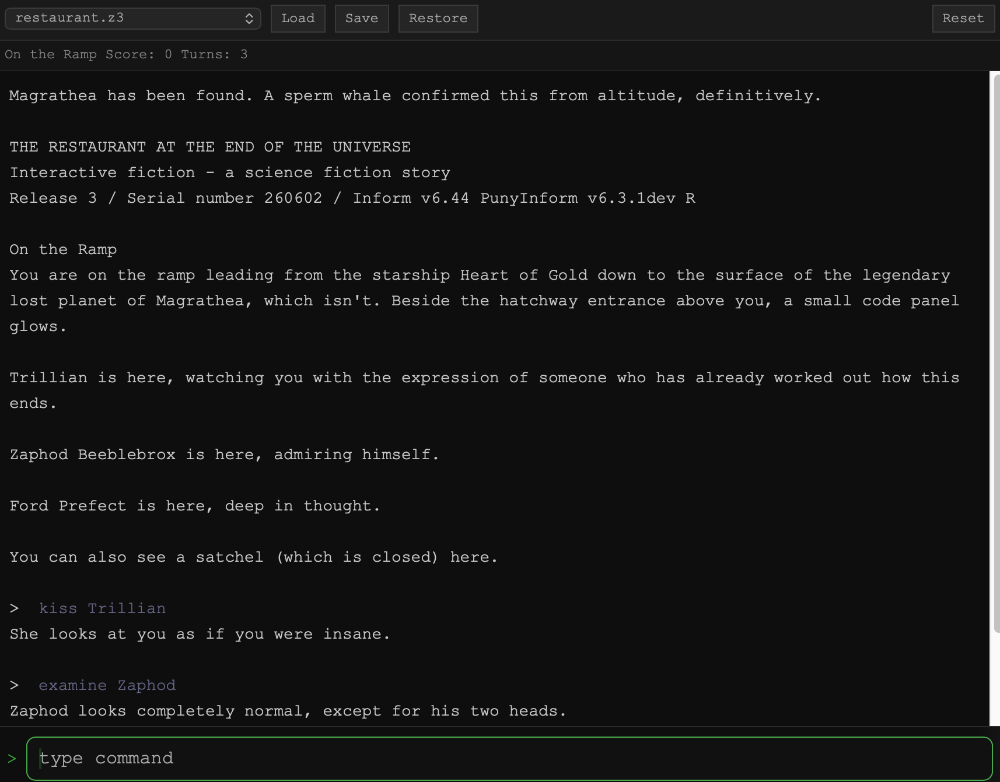
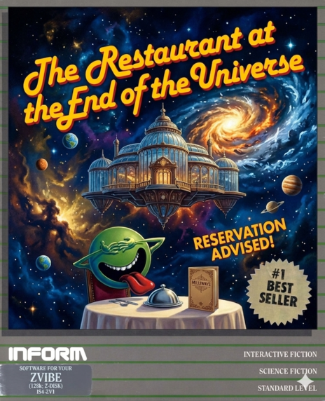

Static story content lives in flash, read in-place. Dynamic game state fits in 32 KB. Saves are delta-compressed. No heap allocation — one C library running on ARM, FPGA soft-cores, and the browser.

In 1979, a company called Infocom created a portable virtual machine for text adventure games. Write a game once; run it on every computer that existed. The same bytecode — a .z3 file — played on Apple II, CP/M, DOS, and Atari, because a small interpreter layer on each platform handled the differences.
The games were extraordinary. Zork. The Hitchhiker's Guide to the Galaxy. Plundered Hearts. They demanded more from a reader than any modern game asks of a player. Millions of people learned to type at one.
ZVibe is a new Z-machine interpreter — not for 1980s home computers, but for the most constrained hardware we could find.
A portable virtual machine that lets a single game run on every home computer of the era. Write once, play anywhere.
Douglas Adams and Steve Meretzky collaborate on one of the best-selling text adventures ever made. Same .z3 bytecode format.
A C99 reimplementation purpose-built for embedded systems — custom FPGA SoCs, ARM microcontrollers, and a WebSocket-based web terminal.
Infocom's original interpreters faced the same problem on 1980s home computers: story files were bigger than available RAM. Their solution was to treat the story as a read-only resource and page in only what the interpreter needed at runtime. ZVibe applies the same principle — then keeps going.
The story file is partitioned at load time. Static content — strings, object tables, grammar — stays in flash and is read in-place via XIP. Only truly mutable state (globals, object properties, call stack) is copied to RAM.
All state is statically sized at compile time. No malloc, no free, no fragmentation. Memory layout is fully auditable before the first instruction executes — a hard requirement for bare-metal targets with no MMU.
Save slots store only the bytes that changed since load — not a full snapshot. Slots rotate to distribute write wear across UFM/EEPROM pages. CRC32 validates every restore.
A build-time layout calculator packs firmware, a game index, story files, and save slots into available flash with no dead space. Story capacity recovered on MAX10 by eliminating static padding in the original layout.
The Z-machine text engine reads sequentially through large string tables. A 4 KB BRAM cache on the Arty QSPI XIP controller exploits this pattern, amortizing flash command overhead across burst reads.
ZSCII text is decoded and emitted character-by-character rather than into a staging buffer. Eliminated a 512-byte stack allocation — and a truncation bug that only appeared on long room descriptions.
The same platform-agnostic C99 core builds for every target. HAL layers isolate the differences — flash reads, UART I/O, save slots — so the interpreter itself is never touched.
The FPGA SoCs are custom-built: Wishbone interconnect, UART, XIP flash controller, and save-slot manager with wear leveling. Each subsystem was verified in simulation before any hardware was touched.
Linux, macOS, Windows. The development baseline and primary CI target.
ARM Cortex-M4F microcontroller. Two rounds of RAM optimization to reach 25 KB.
SERV RISC-V soft-core on FPGA. UFM XIP flash; 100 MHz timing closure. Save/restore on hardware.
SERV RISC-V soft-core. QSPI XIP flash with 4 KB BRAM cache — 2.7× speedup measured on hardware.
Platform-agnostic WebSocket session layer. Any browser on any network-connected device.
ZVibe ships with a bundled game that is both a playable story and a purpose-built regression target. Not a toy script — a complete 42-point interactive fiction set in Douglas Adams' universe, with NPCs, timed events, randomized puzzles, save/restore, and a navigable maze.
Every feature that matters in production — parser edge cases, object-tree traversal, stack depth, I/O timing — gets exercised across hundreds of turns, on every target including FPGA hardware.

A devoted fan-made sequel to Infocom's Hitchhiker's Guide to the Galaxy (1984), drawing on the original Infocom ZIL source for the unreleased sequel by Stu Galley. Built with Inform 6 and PunyInform. Three regression scripts covering save/restore, cold death, and timed daemon behavior.
The console target builds from standard C99 with no dependencies beyond a C compiler and Make. The bundled Czech conformance suite runs unattended — no game file required.
# macOS xcode-select --install # Ubuntu / Debian sudo apt install build-essential # Build and run the Z-machine conformance suite cd target/console make clean && make echo quit | ./build/bin/zvibe_minimal ../../games/catalog/czech.z3 # Play the bundled game interactively ./build/bin/zvibe_console ../../games/catalog/restaurant.z3